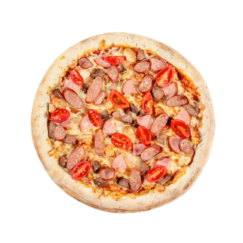

Pepperoni pizza
About...
"Pepperoni" ─ a spicy pizza
with the same name as the main ingredient - Italian salami. A lot of
peppers and spices, cheese and fragrant meat sausages are the main
components of the dish, which has gained popularity in all countries
of the world. In the U.S., pizza with spicy, searing toppings is in
particularly high demand, so many residents of the North American
continent consider this recipe to be on the list of national menus.
But, in fact, the homeland of pepperoni pizza, as well as many other
varieties of baked goods, is Italy. The main ingredients in the
original recipe for salami pepperoni were pork, herbs, and several
types of peppers. American sausages include three kinds of meat
(pork, beef, and chicken), hot Chilean peppers, Sicilian herbs, and
fragrant spices. It is no coincidence that pepperoni is used as the
main ingredient for "hot" pizza. Fans of spicy meat dishes will love
this recipe. The soft mozzarella cheese softens the searing spiciness
of the meat, giving the dish a certain spiciness. You can order pizza
"Pepperoni" with additional ingredients from the list presented on the
site: olives, jalapeño peppers and soft cheese are ideal for this recipe.
Needed ingredients
- 1 can Tomato Sauce-No Salt Added
- 1/4 cup grated Parmesan cheese
- 1/4 teaspoon dried oregano
- 1 prebaked thin pizza crust
- 1 cup shredded part-skim mozzarella cheese
- 1/3 cup sliced pepperoni
How to cook it?
STEP ONE
Preheat oven to 450°F. Combine tomato sauce, Parmesan cheese
and oregano in small bowl; spread tomato sauce evenly over crust.
Sprinkle pizza with mozzarella cheese; top with pepperoni.
STEP TWO
Place on ungreased pizza pan. Bake 12 to 15 minutes or until
edges of crust are browned lightly and cheese melts. Cut pizza
into 6 slices.

Four meat pizza
About...
A mouthwatering 4-meat pizza is one of the most popular dishes
ordered by fans of Italian cuisine. To make the pastries as delicious
as in the traditional pizzerias of Naples, you need to use the highest
quality and freshest products. The recipe includes chicken and beef meat,
bacon and ham. Our chef carefully monitors the selection of ingredients
for baking, controlling the cooking process. The dough is soaked with the
juice of lightly fried meat, which, combined with warm creamy mozzarella
cheese, acquires a delightful taste. Fresh tomatoes and Bavarian sausages
complete the composition and give the dish a piquant zest. The choice of
sauce is at the discretion of the customer. Meat dishes are perfectly
combined with creamy and tomato compositions.
Needed ingredients
- 1 Pack Rizer's Bacon
- 1 Pack Rizer's Loose Sausage
- 1/2 Cup Hormel Pepperoni
- 1/2 Cup Diced Ham
- 3 Cups Shredded Fiesta Cheese
- 1 Pre Made Pizza Crust
- 1 Jar Pizza Sauce
- 2 Tbsp Diced Spinach
How to cook it?
STEP ONE
Bake Rizer's Bacon on large sheet pan at 350°F for 15 minutes
or until crispy and done. Using tongs, remove from pan and set
on napkin lined plate to absorb excess grease. Once cooled,
dice bacon and set aside.
STEP TWO
Cook Rizer's Loose Sausage in pan on stove at med/high
for 15 minutes or until done. Drain excess grease from
sausage once it is cooked. Place your favorite pizza crust
on a pizza pan. Spray the edges of the crust with cooking
spray- this will ensure a nice and crispy crust. Add pizza sauce.
Sprinkle 1.5 Cups of shredded fiesta cheese. Add Pepperoni.
Add diced Rizer's Bacon. Add Rizer's Sausage. Add diced ham.
Top with 1.5 Cups of Cheese.
STEP THREE
Bake Pizza at 400°F for 15-20 minutes or until cheese
is melted and pizza crust is golden.
Diablo pizza
About...
Diablo pizza is one of the old recipes of traditional Italian
cuisine. The colorful name indicates the searing taste of
the dish. This type of pastry is preferred by fans of spicy
food and flavorful meat. Diablo" pizza is filled with a variety
of sausages (Bavarian, Viennese, pepperoni), soft mozzarella
cheese, mushrooms and sweet peppers. Mexican jalapeno pepper
adds some spice to the dish. A tomato sauce made of fresh
tomatoes is a wonderful addition to this hot pastry.
Once you try a slice of Diablo's pizza with the flavor of juicy
salami, Sicilian herbs and cherry tomatoes you'll become a true
fan of Italian cuisine. Everything brilliant is simple, and
"devilishly" delicious pastry recipe is a convincing confirmation
of the famous aphorism. A salad of fresh vegetables and your
favorite drink - juice, cola or light beer - will be an excellent
addition to the spicy dish.
Needed ingredients
- Flour, for dusting
- 5 tbsp Ooni’s Classic Pizza Sauce
- Spicy meatballs
- Pepperoni
- Sea salt and freshly ground pepper
- 160g Ooni’s Classic Pizza Dough
- 90g mozzarella cheese, torn into chunks
- Parma ham
- 2 red chillies, deseeded and finely sliced
How to cook it?
STEP ONE
Preheat your Ooni to 500°C. Lightly flour your pizza peel.
STEP TWO
Stretch the pizza dough out to about 30cm diameter and place it
on the peel.
STEP THREE
Using a large spoon or ladle, spread the pizza sauce evenly
across the pizza base, leaving a 1cm sauce-free border around
the edge. Top with the mozzarella, then the meats and finish
with the chilies.
STEP FOUR
lide the pizza off the peel and into your Ooni. Bake for 60
seconds, rotating the pizza about every 20 seconds so it bakes
evenly and doesn’t burn.
STEP FIVE
Once cooked, season the pizza and serve straight away.
Hawaii pizza
About...
"Hawaiian" pizza is an original dish with a delicate, subtle
flavour, given by juicy pineapple combined with tender meat.
The recipe was created by Sam Panopoulos, a Canadian-born Greek.
The product takes its name from the brand name of the canned
pineapple used in pizzerias for toppings. Residents of the
North American country were the first to try Hawaiian pizza
and the dish quickly became a national trend. Hawaiian pizza
is in particular demand among health-food lovers. The low-calorie,
easy-to-digest ingredients (mozzarella, chicken and pineapple)
create a harmonious, sweet-and-sour flavour profile. Each
pizzaiolo makes small modifications to the basic recipe, so
there are many variations of this pizza around the world.
Needed ingredients
- 1/2 recipe homemade pizza crust
- 1/2 cup (127g) pizza sauce
- 1 and 1/2 cups shredded mozzarella cheese
- 1/2 cup (75g) cooked ham or Canadian bacon
- 1/2 cup (82g) pineapple chunks
- 3 slices bacon, cooked and crumbled
How to cook it?
STEP ONE
Prepare pizza dough through step 5, including preheating
the oven to 475°F (246°C). Cover the shaped dough lightly
with plastic wrap and allow it to rest as the oven preheats.
STEP TWO
To prevent the pizza toppings from making your pizza crust
soggy, brush the shaped dough lightly with olive oil. Using
your fingers, push dents into the surface of the dough to
prevent bubbling. Top the dough evenly with pizza sauce, then
add the cheese, ham, pineapple, and bacon.
STEP THREE
Bake pizza for 12-15 minutes. Remove from the oven and top
with fresh basil, if desired. Slice hot pizza and serve
immediately.
STEP FOUR
Cover leftover pizza tightly and store in the refrigerator.
Reheat as you prefer. Baked pizza slices can be frozen up
to 3 months. See pizza crust recipe for instructions on
freezing the pizza dough.
Marinara pizza
About...
The history of pizza marinara goes back centuries.
Originally it was a tomato sauce with garlic that fishermen
took with them on long voyages. This tangy concoction has been
around for a long time, adding variety to the fishermen's humble
menus. The flatbread with the same name appeared much later, and
in the first version it was a small crust with tomatoes, cottage
cheese and oregano leaves. It's hard to say who came up with the
idea of using seafood and fish for toppings, but the innovative
recipe appealed to fishermen's families, and later to everyone
who loves seafood. Modern pizzerias bake "Marinara" with squid,
mussels, shrimp, soaking the crust with lots of cheese. It's a
very wholesome meal that can't fail to delight gourmets. The
flavour of an Italian dish depends directly on the ingredients.
Only fresh (or freshly frozen) produce has the desired characteristics
that determine the flavour of the food.
Needed ingredients
- 1 ball Best Pizza Dough
- ½ cup Easy Pizza Sauce
- 1 garlic clove
- 1 handful fresh oregano
- Semolina flour or cornmeal, for dusting the pizza peel
- Kosher salt
- Extra virgin olive oil, for drizzling
How to cook it?
STEP ONE
Make the pizza dough.This takes about 15 minutes to make and 45
minutes to rest. Place a pizza stone in the oven and preheat to
500°F. OR preheat your pizza oven.
STEP TWO
Make the pizza sauce. Prepare the toppings. Thinly slice the
garlic clove. Chop the oregano leaves. When the oven is ready,
dust a pizza peel with cornmeal or semolina flour. Spread the
pizza sauce over the dough using the back of a spoon to create
a thin layer. Top with thinly sliced garlic.
STEP THREE
Bake the pizza until the cheese and crust are nicely browned,
about 5 to 7 minutes in the oven.